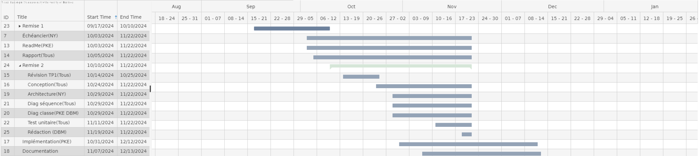

Cadre du projet
Introduction
À Montréal, les travaux publics et privés sont omniprésents et affectent quotidiennement la vie des résidents. Les chantiers, qu'ils soient imprévus ou mal communiqués, entraînent des perturbations majeures comme des embouteillages, des fermetures de routes ou des obstacles pour les piétons. Bien que des outils comme le service Info entraves et travaux existent, ils présentent des lacunes importantes. Nous proposons donc l'application MaVille qui a pour objectif de favoriser la collaboration entre le public, le privé et la population lors de la planification des travaux touchant la sphère publique.
Échéancier (scrollez à droite)

Hypothèses et propositions
Relation entre la recherche et la consultation de travaux :
Nous supposons que les fonctions de recherche et de consultation de travaux sont complémentaires et s’enchaînent de manière logique. Lorsqu’un résident utilise la fonction de recherche, il obtient une liste de travaux correspondant aux filtres appliqués, tels que le type de travaux ou le quartier. Cette liste comprend tous les travaux, qu’ils soient terminés, en cours, ou planifiés.
Si le résident choisit ensuite de consulter les travaux, une liste filtrée est alors affichée, ne montrant que les travaux en cours et ceux prévus. À partir de cette liste, le résident peut accéder à des informations plus détaillées sur chaque projet, s'abonner aux notifications spécifiques du projet, signaler un problème ou affiner encore la sélection en filtrant par rue.
Ainsi, la fonction de recherche fournit une vue d'ensemble de tous les travaux, tandis que la consultation restreint cette vue aux projets actifs ou imminents, offrant des options d’interaction plus détaillées.
Affichage personnalisé pour chaque utilisateur :
Nous assumons qu’une fois connecté, chaque utilisateur a accès à une page d'accueil personnalisée présentant des informations pertinentes pour son profil. Par exemple, un résident voit les divers travaux dans son quartier, avec des options pour interagir avec ces travaux. Un intervenant, de son côté, voit les projets de travaux en cours, ainsi que les nouveaux projets soumis, lui permettant d’en suivre l’avancement ou d’en initier de nouveaux.
Exigences
Après de nombreuses rencontres avec le client et une familiarisation avec les défis liés à la coordination des travaux publics et privés à Montréal, nous avons préparé un glossaire rassemblant les termes et expressions clés caractérisant l'environnement.
Glossaire
- Terme 1 : MaVille
- Application proposée pour améliorer la coordination et la communication entre les résidents de Montréal, les intervenants (publics et privés) et la ville concernant les travaux publics et privés.
- Terme 2 : Résident
- Toute personne étant enregistrée ou reconnu comme habitant de la grande région de Montréal
- Terme 3 : Intervenant
- Toute personne, entreprise ou organisation impliquée dans la réalisation ou la gestion de travaux publics ou privés, incluant la ville elle-même.
- Terme 4 : Projet
- Un ensemble de travaux, soumis par un intervenant, et affectant un quartier ou une rue. Un projet inclut des informations telles que le titre, la description, le type de travaux, les dates de début et de fin, et les quartiers concernés.
- Terme 5 : Travaux
- Ensemble des activités de construction, d'entretien, de réparation ou d'amélioration réalisées sur des infrastructures publiques ou privées. Les types de travaux prévus par l'application: travaux routiers, travaux de gaz ou électricité, construction ou rénovation, entretien paysager, travaux liés aux transports en commun, travaux de signalisation et éclairage, travaux souterrains, travaux résidentiels, entretien urbain, entretien des réseaux de télécommunication.
- Terme 6 : Statut des travaux
- Le statut d'un projet décrit son avancement : un projet peut être prévu, en cours, suspendu, ou terminé, selon son état actuel dans le processus de réalisation. Il doit être mis à jour par l'intervenant.
- Terme 7 : Planification participative
- Processus permettant aux résidents de contribuer à la planification des travaux en exprimant leurs préférences pour les horaires ou en partageant leur avis sur les projets qui affectent leur quartier.
- Terme 8 : Signalement
- Action par laquelle un résident informe la ville d'un problème lié à des travaux. La ville prend en charge le signalement en assurant un suivi à l'extérieur de l'application MaVIlle, de l'évaluation à la résolution du problème signalé.
- Terme 9 : Identifiant de la ville
- Numéro d'identification à 8 chiffres fournit par la ville, et requis pour s'enregistrer comme intervenant dans MaVille.
- Terme 10 : Quartier
- Nous considérons comme quartiers les 19 arrondissements de l'île de Montréal: Ahuntsic-Cartierville, Anjou, Côte-des-Neiges–Notre-Dame-de-Grâce, Lachine, LaSalle, Le Plateau-Mont-Royal, Le Sud-Ouest, L’Île-Bizard–Sainte-Geneviève, Mercier–Hochelaga-Maisonneuve, Montréal-Nord, Outremont, Pierrefonds-Roxboro, Rivière-des-Prairies–Pointe-aux-Trembles, Rosemont–La Petite-Patrie, Saint-Laurent, Saint-Léonard, Verdun, Ville-Marie, Villeray–Saint-Michel–Parc-Extension
- Terme 11 : Requête de travaux
- Demande soumise par un résident via l'application pour signaler un besoin spécifique de travaux privé ou public dans son quartier. La requête inclut des détails tels que le type de travaux, la description, et la date de début souhaitée.
- Terme 12 : Notifications personnalisées
- Alertes envoyées aux résidents via l'application en fonction de leur localisation. Ces notifications informent les utilisateurs des mises à jour concernant les travaux dans leur quartier, les rues qu'ils suivent.
- Terme 13 : API
- Ensemble de règles et d'outils qui permet à des applications logicielles de communiquer entre elles.
- Terme 14 : Info-Entraves
- Outil web fournissant des renseignements sur la nature, la durée ainsi que sur les entraves qu'occasionnent les travaux en cours des grands chantiers sur le réseau routier de la Ville de Montréal.
Cas d'utilisation
Notes à propos du diagramme
- Résident (Principal) et Intervenant (Principal) et Ville de Montréal (Secondaire)
Scénarios
Scénario principal
- Le résident ouvre l’application
- Il sélectionne l’option « S’inscrire »
- Il entre les informations demandées par le système
- Le système valide les informations entrées par l’utilisateur
- Le système enregistre les informations et le compte est créé
Scénarios alternatifs
Scénario principal
- L'intervenant ouvre l’application
- Il sélectionne l’option « S’inscrire »
- L’identification de la ville de Montreal lui est demandé
- Le système valide l'identificateur municipale
- Il entre les informations pour la création du compte
- Le système valide les informations entrées par l’utilisateur
- Le système enregistre les informations et le compte est créé
Scénarios alternatifs
Scénario principal
- L'utilisateur ouvre l’application
- Il sélectionne l’option « Se connecter »
- Il entre les informations demandées par le système
- Le système valide les informations entrées par l’utilisateur
- L’utilisateur accède au menu correspondant à son type de compte
Scénarios alternatifs
Scénario principal
- À partir du menu des résidents, l’utilisateur sélectionne l’option « Rechercher des travaux ».
- Le système affiche l’ensemble des travaux enregistrer dans l’application « MaVille ».
- L’utilisateur peut filtrer les résultats selon plusieurs critères pour spécifier sa recherche
Scénarios alternatifs
Aucun
Scénario principal
- Après avoir affiché les travaux correspondant aux filtres sélectionnés, le résident choisit un travail particulier.
- Le système affiche les informations liées à ce travail.
Scénarios alternatifs
Aucun
Scénario principal
- Le résident sélectionne un travail ayant le statut prévu.
- Il sélectionne l’option « Participer à la planification »
- Le système ajoute la réponse de l’utilisateur à l’ensemble
- Un message indiquant au résident que son action a été pris en compte est envoyé
- L’utilisateur retourne au menu précédent
Scénarios alternatifs
Scénario principal
- Le résident sélectionne un travail ayant le statut « Terminé ».
- Il sélectionne l’option « Partager son avis »
- Le système demande d’entrer un message
- L’avis en enregistrer et associé au travail visé
Scénarios alternatifs
Scénario principal
- Le résident sélectionne un travail ayant le statut « En cours ».
- Il sélectionne l’option « Signaler un problème »
- Le système demande les informations nécessaires au signalement
- Le système vérifie les informations entrées par l’utilisateur
- Un message d’envoi est partagé au résident
- Le résident revient au menu précédent
Scénarios alternatifs
Scénario principal
- À partir du menu des résidents, l’utilisateur sélectionne l’option « Requête de travail »
- Il sélectionne ensuite l’option « Soumettre une nouvelle requête de travail »
- Le résident entre les informations demandées par le système
- Le système vérifie les informations entrées
- La requête de travail est enregistrée
Scénarios alternatifs
Scénario principal
- À partir du menu des résidents, l’utilisateur sélectionne l’option « Requête de travail »
- Il sélectionne ensuite l’option « Faire le suivi d’une requête de travail »
- La soumission de l’intervenant sur la requête de travail est affichée
- L’utilisateur accepte la candidature de l'intervenant
- Un message de confirmation est affiché
Scénarios alternatifs
Scénario principal
- À partir du menu principal, l’utilisateur sélectionne l’option « Consulter mon profil »
- Le système affiche l’ensemble des informations du profil
- L’utilisateur peut choisir de consulter ses notifications ou modifier son profil
Scénarios alternatifs
Aucun
Scénario principal
- Le système affiche toutes les notifications de l’utilisateur
- L’utilisateur consulte une notification particulière
- Les informations liées à cette notification sont affichées
Scénarios alternatifs
Scénario principal
- Le système affiche tous les éléments du profil
- L’utilisateur sélectionne l’ensemble des informations qu’il désire modifier
- Il indique au système les changements à effectuer
- Le système vérifie la validité des réponses.
- Un message de confirmation du changement est affiché
- L’utilisateur revient au menu précédent
Scénarios alternatifs
Scénario principal
- À partir du menu des intervenant, l’utilisateur sélectionne l’option « Consulter la liste des travaux »
- Le système affiche la liste de tous les travaux entrepris par l’intervenant
Scénarios alternatifs
Scénario principal
- L’intervenant sélectionne un travail ayant le statut « Prévu »
- Les informations générales liées au travail s’affichent
- L’utilisateur consulte les préférences des résidents au bas des informations grâce à une représentation visuelle des plages horaires les plus populaires.
Scénarios alternatifs
Aucun
Scénario principal
- L’intervenant sélectionne un travail
- Les informations générales liées au travail s’affichent
- L'intervenant sélectionne l'ensemble des informations à modifier
- Il entre les nouvelles données
- Le système vérifie si les informations sont valides
- Un message de confirmation est envoyé à l’utilisateur
- Le travail est de nouveau affiché avec les informations mises à jour
Scénarios alternatifs
Scénario principal
- À partir du menu des intervenant, l’utilisateur sélectionne l’option « Consulter la liste des requêtes »
- Le système affiche la liste de toutes les requêtes faites par les résidents
- L’utilisateur peut filtrer sa recherche par type, quartier et date de début
Scénarios alternatifs
Scénario principal
- L’intervenant sélectionne une requête de travail
- Les informations liées à cette requête de travail s’affichent
- L’intervenant pose sa candidature en spécifiant la date de début et de fin
- Le système vérifie si les informations sont valides
- Un message de confirmation est envoyé à l’utilisateur
- Il retourne au menu précédent
Scénarios alternatifs
Scénario principal
- À partir du menu des intervenants, l’utilisateur sélectionne l’option « Soumettre un nouveau projet »
- L’intervenant entre les informations demandées par le système
- Le système vérifie les informations entrées
- Le système affiche un message de confirmation
- Le nouveau projet de travail est enregistré
Scénarios alternatifs
Diagramme d'activités (scrollez à droite au besoin)
Diagramme d'activité principal (scrollez à droite au besoin)

Modifier son profil

Rechercher des travaux

Requête de travail

Consulter ses notifications (scrollez à droite au besoin)

Design
Architecture
Nous avons choisi un modèle C4 pour représenter l'architecture de notre application. Ce type d'approche permet de bien représenter notre système et les éléments qui le compose. Aux travers ces diverses vues, il est possible de comprendre son fonctionnement, grâce à une représentation du système général, de ses conteneur et de ses composantes. Nous nous concentrons ici sur les niveaux 1 et 2 soit le système général et ses conteneurs ainsi que la relation entre ceux-ci.

Diagramme de classe (scrollez à droite au besoin)

Diagramme de sequence (scrollez à droite au besoin)
Consulter les entraves (scrollez à droite au besoin)

Soumettre une requête de travail (scrollez à droite au besoin)

Consulter la liste des requêtes de travail (scrollez à droite au besoin)

Choix de design
Une bonne conception se doit d’être claire et extensible, minimisant ainsi l’effort
nécessaire pour effectuer des modifications ou assurer la maintenance de l’application.
Le polymorphisme, comme illustré par l’utilisation de la classe abstraite User et de
ses sous-classes, permet d’ajouter facilement de nouveaux types d’utilisateurs sans
perturber le reste du système. Par ailleurs, la classe AbstractMenu encapsule des comportements
partagés entre les menus spécifiques tels que ResidentMenu et IntervenantMenu. Les méthodes
abstraites utilisées dans cette classe offrent une structure commune tout en laissant la
place à des implémentations spécifiques.
Un faible couplage entre les modules et une forte cohésion à l'intérieur de chacun d’eux est
primordial. C’est dans cette optique que nous avons choisi un design effectuant une séparation
entre les classes ManageUsers, ProjectsServices, et UserServices. Chacune de ces classes est
autonome et se concentre sur une responsabilité précise, comme la gestion des utilisateurs ou
des projets. Cette organisation améliore la modularité du système et facilite l’ajout de nouvelles
fonctionnalités.
L’encapsulation, conformément aux standards de la programmation orientée objet, est également
un principe fondamental de notre conception. En appliquant le principe de la boîte noire, nos
attributs des classes sont privés et accessibles uniquement via des méthodes publiques. Cela limite
les dépendances directes entre les modules et réduit les risques d’incohérences. De plus, les
classes abstraites permettent d’unifier des comportements communs tout en imposant des règles
aux sous-classes.
Notre conception modulaire améliore non seulement la compréhension et la maintenance de l’application,
mais aussi sa capacité à évoluer. La structure de l’application est organisée en modules logiques
distincts (Boundary, Controllers, Entities), rendant le système facilement extensible. Par exemple,
l’ajout d’un nouveau type d’utilisateur ou d’un service peut se faire sans nécessiter de modifications
majeures dans le reste du code.
Enfin, notre système se distingue par son interopérabilité, qui garantit sa capacité à échanger des
données avec d’autres systèmes et à s’intégrer dans un environnement plus large. L’utilisation de
fichiers XML via la classe XMLDatabase permet de normaliser les interactions avec des systèmes
externes, assurant ainsi une communication efficace et cohérente entre les différents composants.
Analyse
Nous proposons une analyse préliminaire de certains facteurs importants dans la réussite du projet MaVille. Nous expliquons d'abord les 5 risques de nous considérons les plus importants et nous proposons des solutions potentielles liées à l'implémentation de l'application. Nous présenterons ensuite 5 besoins non-fonctionnels de l'application. Ces besoins et les risques indentités, nous permettra d'orienter les décisions techniques et organisationnelles du projet que nous présenterons dans les sections sur les besoins matériels, les solutions de stockage et les solutions d'intégration.
Risques
- RISQUE 1 - Problèmes ou abus liés au manque de vérification et de coordination par
la ville des requêtes et des travaux publiés:
Voici quelque cas de figure qui pourraient survenir:- Plusieurs résidents pourraient soumettre simultanément des requêtes pour un même problème, entraînant une confusion dans l'attribution subséquente des travaux.
- Un résident pourrait soumettre une requête pour un problème qui fait l'objet de travaux programmés ou en cours
- Certains résidents pourraient soumettre des requêtes non réalisables, inappropriées, ou fictives, encombrant ainsi le système de gestion des travaux
- Un résident pourrait approuver la candidature d’un intervenant avec lequel il entretient une relation personnelle (risque de collusion), compromettant l'intégrité du processus de sélection des intervenants.
Solution proposée : Il s'agit un problème complexe donc notre solution comporte plusieurs volets.
(1) Avant qu'une requête ne soit validée et soumise au système, mettre en place un système de détection automatique des doublons, sur la base de la géolocalisation et du type de travaux. Un message d'alerte aux résidents lorsqu'une requête similaire est détectée, avec la possibilité de consulter les détails des requêtes existantes.
(2) Ensuite, afin de réduire le risque de soumissions de requêtes fictives ou abusives (et potentiellement effectuées par des bots), nous proposons d'introduire un système de vérification de l’identité des résidents, peut-être avec un lien direct aux informations municipales, sous la forme d'un numéro d'autorisation envoyé par la poste. Nous proposons également de limiter le nombre de requêtes qu’un résident peut soumettre sur une période de temps donné (maximum de 5 requêtes par mois). La mise en place d'un système de CAPTCHA ou reCAPTCHA lors de la soumission des requêtes pour vérifier que l'utilisateur est bien un humain.
(3) Finalement, afin de s'assurer que seuls les travaux légitimes et autorisés par la ville peuvent être publié par les intervenants, ceux-ci devrons fournir le numéro de permis de construction émis par la ville. La ville de Montréal stipule sur son site: 'Le permis de construire est une autorisation administrative obligatoire qui donne les moyens à l'administration de vérifier qu'un projet de construction respecte bien les règles de construction en vigueur.' Nous voulons donc intégrer un mécanisme qui vérifie automatiquement si un numéro de permis valide a été délivré par la ville pour un certain travail. - RISQUE 2 - Conflit d’horaire entre les intervenants
Puisque les intervenants n'ont pas accès aux travaux des autres intervenants, deux intervenants pourraient planifier des travaux simultanément dans la même rue ou quartier, ce qui entraînerait une congestion supplémentaire ou des interférences entre les projets (ex. : accès bloqué, bruit excessif, partage d'équipement)..
Solution proposée : L'application pourrait intégrer un système d'alertes automatiques qui détecte les conflits d’horaire potentiels dès qu'un intervenant soumet un nouveau projet. Si un conflit est détecté (par exemple, deux projets sur la même rue ou à proximité à des dates similaires), l’intervenant serait notifié et pourrait ajuster ses dates en conséquence.
- RISQUE 3 - Enjeux liés à la conciliation des préférences des résidents avec les contraintes des intervenants :
entreprises et services publics ont leurs propres contraintes logistiques (disponibilité des employés, budget, coordination
avec d'autres projets, etc.) qui pourraient rendre la prise en compte des préférences des résidents irréaliste.
Les intervenants (entrepreneurs, services publics) pourraient refuser de suivre les horaires proposés par les résidents.
De plus, le non-respect des délais prévus pour les travaux pourrait entraîner une perte de confiance chez les résidents,
aggravant les tensions.
Solution proposée :
(1) Une fois le travail terminé, l'application permet de laisser une évaluation du travail réalisé. Nous proposons que cette évaluation soit subdivisée en plusieurs volets, dont l'un d'eux serait "respect des délais" et un autre serait "Prise en compte de préférences des résidents". Ces volets s'accompagneraient d'un score, et leur cumule donnerait le score pour un travail donné. Ces scores seraient par la suite visible sur le profil de l'intervenant, de telle sorte que les résidents pourraient sélectionner les intervenants avec les meilleurs scores pour leur requêtes de travaux. Cela inciterait ces derniers à mieux respecter les attentes des résidents.
(2) Lors de la soumission d’un projet dans l’application, les intervenants devraient spécifier leurs contraintes logistiques et indiquer l'impact de celles-ci sur l'horaire prévu. Ils proposeraient ainsi une première sélection de plages horaires parmi lesquelles les résidents pourraient choisir, en tenant compte de certaines restrictions, comme un nombre minimum ou maximum de créneaux sélectionnables. Une mise à jour serait effectuée selon la progression des travaux. C'est-à-dire qu'en cas de conflits, d'imprévus ou de retard dans les travaux, les résidents seraient notifiés et ils pourraient effectuer de nouveau la sélection de l'horaire. - RISQUE 4 - Manque d'implication au niveau des institutions municipales :
Le succès de l'application sera fortement corrélé avec la collaboration des institutions municipales. Selon les
exigences fournies, il est pris pour acquis que la ville devra minimalement: effectuer les suivi des signalements des
résidents, fournir les autorisations d'inscriptions des nouveaux intervenants, réviser et approuver les soumissions
sur les requêtes acceptées. Nous proposons, qui plus est, que la ville soumette des autorisations d'inscription aux
résident (voir les solutions proposées de risque 1). Puisque la participation active de la ville sera essentielle
au bon déroulement des opérations, si ces opérations ne sont pas correctement et efficacement effectuées, plusieurs
enjeux peuvent survenir :
- Les résidents ne reçoivent pas de suivi ou reçoivent un suivi tardif de leur signalement. À la longue, cela dissuaderait les résidents d'utiliséer cette fonctionnalité et pourrait également entraîner une perte de confiance en l'application.
- Similairement, les utilisateurs pourrait attendre trop longuement pour leur autorisation d'enregistrement.
- Elle pourrait omettre (délibérément, par erreur ou par méconnaissance) de prendre en compte les requêtes de travaux déjà acceptées par les résidents lors de l'évaluation des nouveaux projets de travaux publics soumis. En l'absence de mécanisme pour informer la ville des requêtes approuvées par les résidents, ces dernières risquent de ne pas être intégrées dans la planification des travaux publics, réduisant ainsi la portée réelle de l'influence des citoyens sur les décisions liées aux travaux.
Créer un tableau de bord pour la ville, intégré à l'application, où elle peut consulter, en temps réel, toutes les requêtes de travaux approuvées par les résidents. Cela permettrait de mieux coordonner les projets publics avec les requêtes déjà validées par les citoyens. Le tableau de bord pourrait également inclure une fonctionnalité permettant aux employés municipaux de gérer et de suivre l'évolution des signalements soumis par les résidents. La ville pourrait utiliser cet outil pour gérer plus efficacement les demandes d'inscription des nouveaux intervenants (et potentiellement des nouveaux résidents). Cette interface pour la ville inclurait également un système de notifications ou de rappels automatiques pour alerter les employés lorsqu'une action est requise
- RIQUE 5 - Adoption insuffisante par les utilisateurs (résidents ou intervenants) : Si l'application
n'est pas largement adoptée par les résidents et les intervenants, elle ne pourra pas remplir sa mission de faciliter
la communication, d'améliorer la planification des travaux et de réduire les perturbations causées par ces derniers.
Ce risque est en partie lié au Risque 4 (manque d'implication des institutions municipales). En effet, si la ville ne
promeut pas activement l'application auprès de ses citoyens et des intervenants, notamment ceux demandant des permis
de construction, cela risque de limiter son adoption. Une faible adoption représente un risque majeur. Par exemple,
si seulement un projet sur vingt est publié, l'application ne sera pas efficace pour réduire les entraves et encourager
la planification participative, ce qui la rendra rapidement obsolète et sans valeur ajoutée pour les utilisateurs.
Solution proposée :
(1) La ville pourrait organiser une campagne de sensibilisation pour informer les citoyens et les entreprises de l'utilité de l'application, en mettant l’accent sur les bénéfices de la planification participative et la réduction des perturbations. La ville devrait également faire la publicité auprès des intervenants demandant des permis de construction.
(2) Intégrer l'application avec des services déjà utilisés par les citoyens, comme Info-Entraves ou les services municipaux, pour simplifier l’accès à l’information et encourager une adoption plus naturelle. (voir section intégrations)
Besoins non-fonctionnelles
- Sécurité des données : L'application traite des informations personnelles, telles que les noms, adresses, et coordonnées des résidents, ainsi que des données liées aux travaux publics. Donc, la protection des données personnelles et sensibles est primordiale. La base de données devrait être encryptée, selon les dernières techniques en vigueur. Également, les mots de passe devront être hashés
- Scalabilité : Puisque notre application s'addresse à un grand nombre de personnes, le projet devra prévoir une infracsture pouvant de gérer de manière fluide un nombre croissant de résidents, d'intervenants, et de requêtes simultanées. Cela pourrait inclure la possibilité de faire évoluer le système (serveurs, bases de données) pour répondre à une augmentation des utilisateurs ou des transactions sans compromettre les performances.
- Accessibilité : L'application devra tenir compte de la diversité des utilisateurs ciblées. Ils sont répartis sur la large spectrum en ce qui à trait à l'ethnicité, la langue parlée, la mobilité, la scolarité, le niveau de compétences techniques, l'âge et le sexe, pour ne nommer que quelques exemples. Donc, l'interface utilisateur devra être intuitive pour les personnes avec différents niveaux de compétences techniques, adaptée aux utilisateurs de différentes langues (via une option multilingue), et inclusive pour les personnes en situation de handicap (par exemple, en offrant un support pour les lecteurs d'écran et des contrastes adaptés pour les malvoyants).
- Fiabilité : Les utilisateurs doivent pouvoir accéder à l'application à tout moment, surtout lorsqu'ils cherchent des informations sur les travaux en cours ou s'inscrivent pour recevoir des notifications. Une panne pourrait entraîner une frustration chez les utilisateurs et compromettre l'efficacité de la gestion des travaux.
- Performance : Les utilisateurs, qu'ils soient résidents ou intervenants, doivent pouvoir accéder rapidement aux informations qu'ils recherchent. Un temps de réponse rapide est crucial pour leur offrir une bonne expérience utilisateur, d'autant plus que l'application doit afficher de grandes quantités de données. Particulièrement, lorsqu'il est question de la recherche de travaux selon certains filtres.Pour maintenir un temps de réponse rapide, nous allons optimiser les requêtes vers la base de données, implémenter des mécanismes de mise en cache, et garantir que le système soit capable de traiter des volumes importants de données sans ralentissements significatifs.
Besoins matériels
Plusieurs ressources seront nécessaires pour réaliser le projet MaVille. Tout d'abord, des serveurs dédiés seront indispensables pour stocker les données des utilisateurs (résidents, intervenants) et des travaux, tout en gérant les requêtes en temps réel. Ces serveurs devront être assez puissants pour supporter de nombreuses connexions simultanées et garantir une bonne performance. Ensuite, une équipe de développement et de maintenance sera essentielle. Ils auront besoin de stations de travail performantes pour assurer le développement, la maintenance et les tests de l'application, ainsi que pour gérer de grandes quantités de données. Enfin, le capital est un besoin matériel clé pour financer l'infrastructure, les salaires des équipes, et la promotion de l'application auprès des citoyens et intervenants.
Solution de stockage
Dans le cadre du cours, nous optons pour une solution simplifiée en utilisant des fichiers CSV pour simuler le stockage des données. Les fichiers CSV permettent de représenter les données de manière structurée tout en restant faciles à manipuler. Cette approche est suffisante pour les besoins actuels du projet, bien que cette solution ne soit pas adaptée pour des scénarios à grande échelle qui nécessiterait la mise en place d'une base de données. Le prototype actuel un base de donnée sous format XML, qui sera potentiellement modifiée
Solution d'intégration
- Intégration de Google Maps : Google Maps platforme propose un ensemble d'API et de SDK permettant aux développeurs d'intégrer des cartes interactives et de récupérer des informations disponibles via Google Maps. Cette intégration améliorerait la précision de la géolocalisation, notamment pour délimiter les quartiers. Elle pourrait également optimiser la recherche des travaux en rendant l'interface plus intuitive, similaire à celle d'Airbnb, où l'on peut filtrer les résultats tout en utilisant la carte pour affiner la recherche. De plus, l'intégration de Google Maps permettrait de fournir des informations en temps réel sur les obstructions routières et la fluidité du trafic. Voir le lien : Google Maps Platform
- Intégration des API de la ville de Montréal concernant les contrats et les subventions : Dans le cadre de ses politiques de transparence et des données ouvertes, la ville de Montréal met à disposition des APIs qui permettent d'accéder aux informations sur les contrats et subventions octroyés à des particuliers, entreprises, ou organisations. L'intégration de ces API dans l'application MaVille permettrait de rendre publics les détails des contrats liés à des travaux publics, ce qui est essentiel pour assurer la transparence et la responsabilité dans la gestion des projets urbains. En fournissant ces informations, les résidents pourraient mieux comprendre qui est responsable des travaux dans leur quartier, et les coûts associés, renforçant ainsi la confiance dans les processus municipaux. Voir le lien : Contrats et subventions API
- Intégration de certains formulaires disponibles sur le site de la ville de Montréal : Le site de la ville de Montréal offre une panoplie de formulaire de ligne. Entre autre, nous proposons de rediriger le résident vers le formulaire de signalement de problème en ligne. Cela comporterait de nombreux avantages. Puisque la ville a déjà en place un système de réception, d'évaluation et de suivi de ces signalements, nous n'aurions à gérer le transfert de cette information à la ville. Voir le lien : Signaler un problème
- Intégrer les alertes d'info entraves : Info entraves et travaux est un service exploitant les demandes de permis d'occupation faites par les entrepreneurs, intégré au site de la ville de Montréal. Il permet de recherche sur la base de géolocalisation et de filtres les entraves causés par les travaux réalisés par la Ville, les entrepreneurs privés et les particuliers. Ce service rend disponible aux utilisateur une carte interractive qui pourrait être considéré comme une intégration potentielle, à la place de Google Maps. Voir le lien: Info entraves et travaux
- Intégration des bases de données municipales : En plus de proposer un tableau de bord pour les employés municipaux, nous suggérons de connecter l'application aux bases de données de la ville. Cela permettrait d'accéder en temps réel aux numéros d'autorisation d'inscription des intervenants (et potentiellement des résidents). De plus, cette intégration offrirait un accès aux numéros de permis de construction, facilitant ainsi la validation des projets soumis par les intervenants.
Prototype
Pour lancer l'application :
- Assurez-vous que Java est bien installé sur votre machine (
java -version). - Exécutez la commande suivante dans le dossier 'application' :
java -jar MaVille.jar
Pour naviguer dans les différents menus, entrez un des chiffres affichés dans la console.